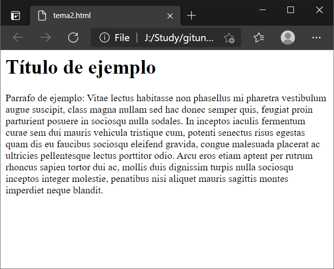

Son la siglas de hypertext markup language, es el lenguaje para construcción de páginas web. Es la principal tecnología del universo WWW: Worl Wide Web.
Actualmente se encuentra en la versión 5 que adiciona elementos, atributos y comportamientos. Terán (2016)
Este lenguaje utiliza el concepto de etiquetas (marcas o tags) para la definición de elementos visuales, estas siguen la estructura:
<inicio_etiqueta>
contenido
</fin_etiqueta>
Estas etiquetas son interpretadas por los navegadores para la presentación de la página al usuario; existen unas etiquets indispensables que deben estar presentes en todos los documentos HTML pues definen su estructura básica, estas son:
<html>
<head>
</head>
<body>
</body>
</html>
La etiqueta html es la parte fundamental dentro del código de una página web, W3SCHOOLS (2021); dentro de ella se tienen dos etiquetas adicionales:
El presente código define un título y un parrafo de ejemplo.
<html>
<head>
</head>
<body>
<h1>Título de
ejemplo</h1>
<p>Parrafo de ejemplo: Vitae lectus habitasse non phasellus mi pharetra vestibulum augue suscipit, class
magna nullam sed hac donec semper quis, feugiat proin parturient posuere in sociosqu nulla sodales. In inceptos
iaculis fermentum curae sem dui mauris vehicula tristique cum, potenti senectus risus egestas quam dis eu
faucibus sociosqu eleifend gravida, congue malesuada placerat ac ultricies pellentesque lectus porttitor odio.
Arcu eros etiam aptent per rutrum rhoncus sapien tortor dui ac, mollis duis dignissim turpis nulla sociosqu
inceptos integer molestie, penatibus nisi aliquet mauris sagittis montes imperdiet neque
blandit.</p>
</body>
</html>
El resultado de ese código en el navegador se presenta a continuación:

Terán Anciano, J. (2016). Manual de Introducción al lenguaje HTML. Formación para el Empleo. Editorial CEP, S.L. Recuperado de https://elibro-net.bibliotecavirtual.unad.edu.co/es/ereader/unad/50964?page=134
W3SCHOOLS, (2021). HTML <body> Tag. Recuperado de https://www.w3schools.com/tags/tag_body.asp
W3SCHOOLS, (2021). HTML <head> Tag. Recuperado de https://www.w3schools.com/tags/tag_head.asp
W3SCHOOLS, (2021). HTML <html> Tag. Recuperado de https://www.w3schools.com/tags/tag_html.asp